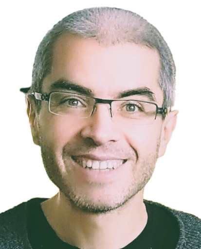
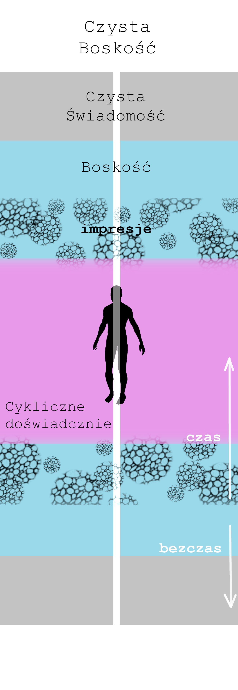
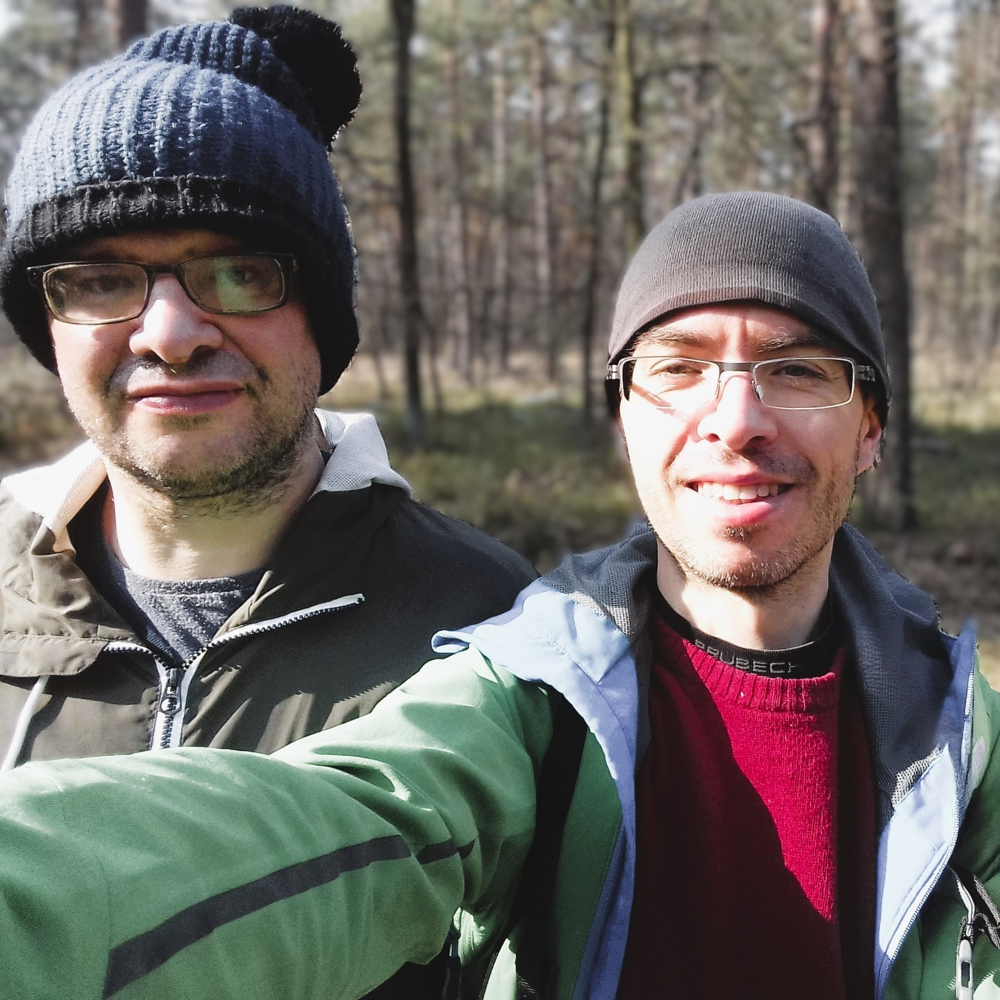
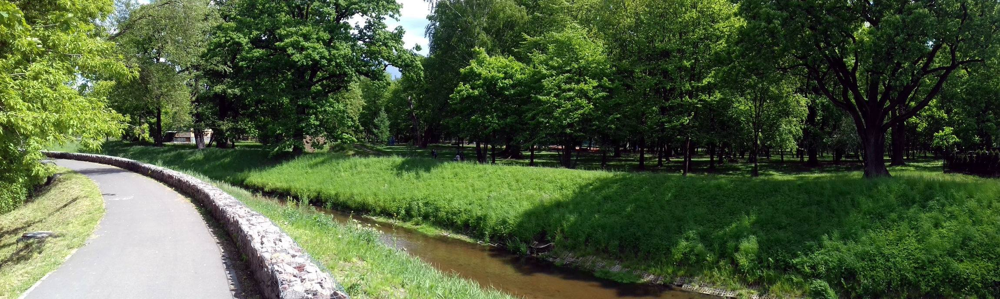
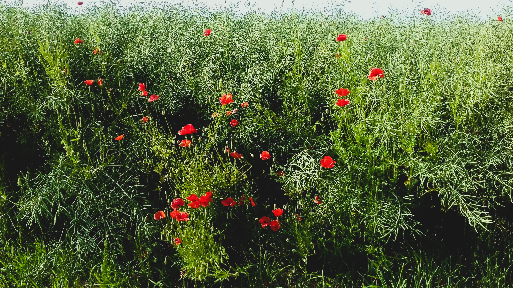
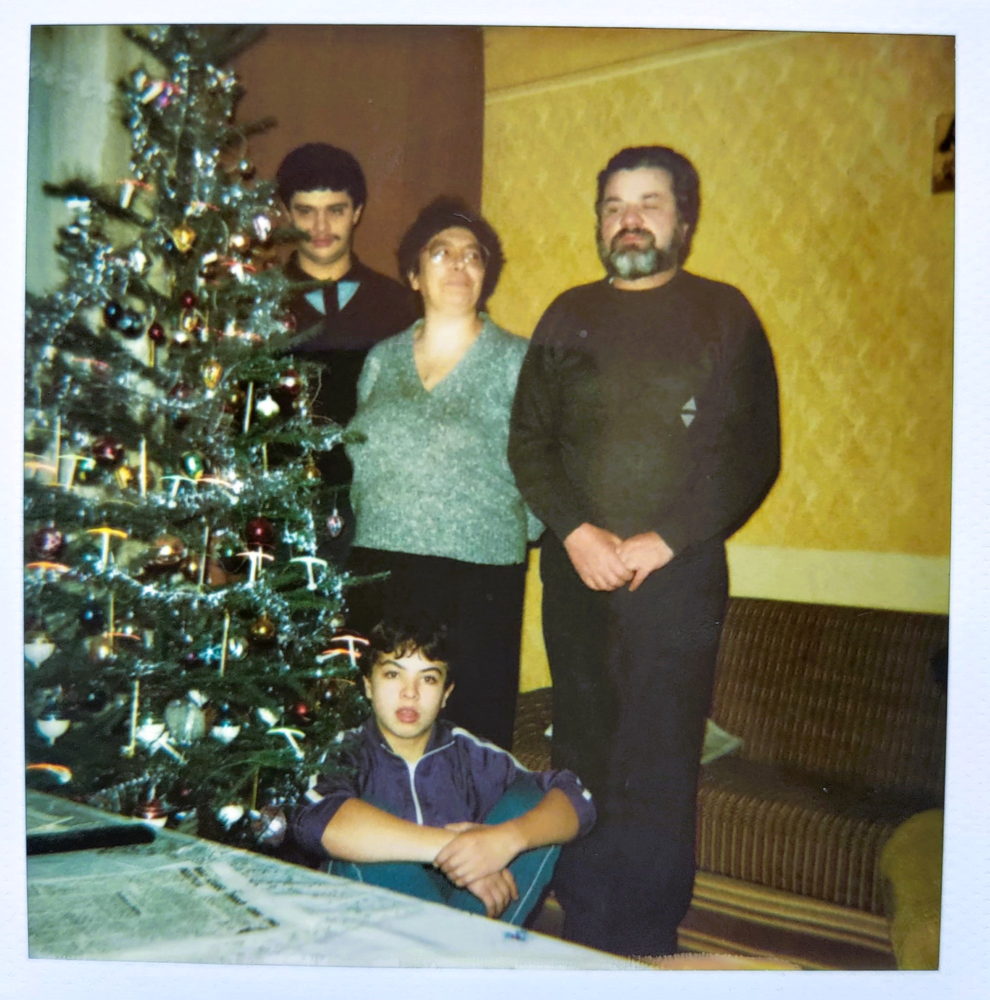
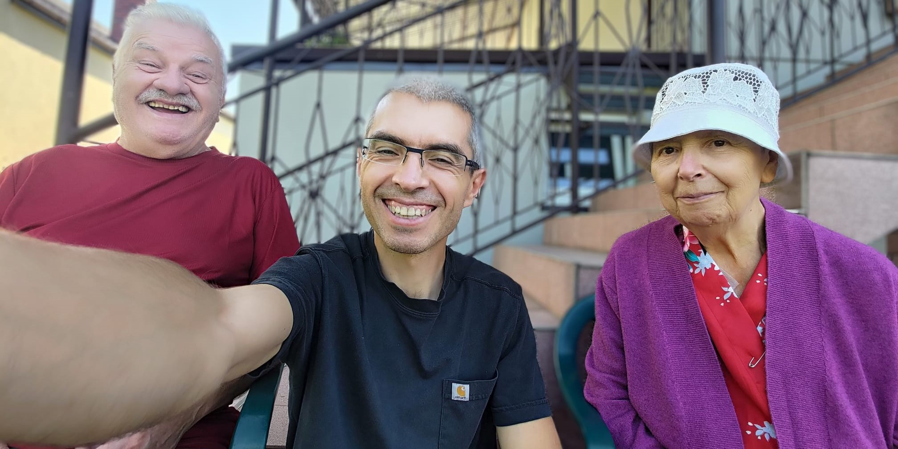

Cześć! Mam na imię Tomek.
Poniżej opisuję prosty model przejścia z doświadczenia oddzielenia w świadomość Boskiej Miłości, oparty na obserwacji zmian, która zachodziły i dalej zachodzą w mojej perspektywie.
Jako ludzie jesteśmy w cyklicznym doświadczaniu, wewnątrz pola Boskości, w którym jednocześnie z percepcją indywidualności, pamiętamy swoją Jedność w Bożej Miłości. Boskość jest przedłużeniem Czystej Świadomości, samo-świadomego nieprzejawionego pola pojedynczego Boskiego Ja. Czysta Świadomość jest przedłużeniem Czystej Boskości, stanu nieskończonej Miłości, Mocy i Chwały Boga.
Pole impresji z jednej strony przyczynia się do krystalizacji naszej ludzkiej indywidualności i jednocześnie przysłania świadomość Boskiej Jedności. Doświadczanie opiera się na pobieraniu oraz wytwarzaniu impresji (pamięci możliwych doświadczeń) przez pole energii, które ukonkretnia się jako fizyczne ciało:
Doświadczanie zawiera cykle o zmiennej skali czasowej, ale najważniejsze z nich to te związane z uwolnieniem głęboko zakorzenionego strachu w części Świadomości, która składa się na nasze poczucie indywidualności. W pewnym sensie całe cykliczne doświadczanie ma na celu stworzenie sytuacji, w których może udać się uwolnić ten głęboko zakorzenionego stres. Linie czasowe ulegają przełączeniu w punktach uwalniania głównych fragmentów tego stresu, albo wchodząc w jakościowo nowe i lżejsze scenariusze, albo zawracając czas wokół aspektów stresu, których nie udało się usunąć. Ogólnie rzecz biorąc, istnieją dwie jakościowe granice rozpiętości cyklicznego doświadczania:
W modalności ego doświadczanie wydaje się mieć funkcję zapewnienia przetrwania obrazowi siebie, a samo obraz siebie jest przyczyną tej funkcji. Takie doświadczanie nacechowane jest nieświadomym uczestniczeniem w cyklach doświadczeń, którym towarzyszy strach, w różnych stopniach jego nasilenia, od niezmiernie subtelnych do niezmiernie przytłaczających, niezmiennie zawierających w sobie odruchowość porównania, osądu, poczucia racji, poczucia konkurencji, wstyd, obwinianie, poczucie winy, przywiązanie, irytację, złość, nienawiść, itp.
W modalności nieba doświadczanie ma funkcję domykania pętli miłości, a sam obraz siebie jest efektem tej funkcji. W tej modalności cykle doświadczeń są świadome, a negatywne odczucia nie są obecne. Pętla miłości domykana jest pomiędzy rzeczywistością bezprzyczynowej i nieliniowej Jedności na zewnątrz czasu i przestrzeni, a tym co jest postrzegane. To domknięcie jest możliwe dzięki opróżnieniu ze strachu, które udrażnia subtelny oraz fizyczny układ nerwowy ludzkiego ciała.
Pomiędzy tymi dwoma modalnościami rozpięty jest łańcuch przebaczenia (zbudowany z cyklów czasu i powiązanego stresu), którego funkcją jest uwolnienie jaźni od tożsamości ze strachem.
Poszerzenie świadomości poza sferę cyklicznego doświadczania jest możliwe za sprawą Łaski Bożej - Inteligencji Istot zamieszkujących w niebiańskiej Jedności, które wspierają przebudzenie wszystkich indywidualnych istot w Świadomości. Istoty Łaski Bożej (nazywanej też Łaską Miłości lub Duchem Świętym) dokonują ekstrakcji naszej indywidualnej perspektywy z pola impresji, tak że ich wpływ na nas przestaje być nieświadomy i dominujący. Nie zmienia to naszej skrystalizowanej osobowości a jedynie czyni ją transparentną i opróżnia ją ze zdolności projekcji i ataku. To co dzieje się w ruchu tak zwanego oświecenia, po jego wstępnej bezosobowej fazie, to objęcie naszej osobowości i ciała energią Bożej Miłości, w Świadomości Jedności siebie oraz tego, co żyje poprzez inne ciała i osobowości. Jedną z form mówienia o tym są teksty Biblioteki Umysłu Chrystusa. W szczególności Kurs Cudów skupia się na mechanizmie przebaczenia poczucia oddzielenia opartym na ścisłej współpracy z Duchem Świętym. Z kolei metafizyka powstania strachu przybliżona jest w opisach Drogi Mistrzostwa oraz Wybierz Tylko Miłość, co ma znaczenie z punktu widzenia motywowania przebaczenia (puryfikacji) strachu w sobie, również w po-osobowych stadiach ewolucji.
~*~Poniżej zamieszczam kilka przykładów dyskretnych oraz rozłożonych w czasie transformacji perspektywy, które powiązane są z przedstawionym powyżej modelem.
W 2009 roku, epizod medytacji otworzył moją perspektywę w bezczasową błogość oraz spontaniczny przepływ Miłości, który trwał dzień i noc przez ponad tydzień. Było to dość niespodziewane - znajoma osoba zwróciła moją uwagę na jednego z mędrców Wschodu, co z kolei przekierowało ją dalej na kilka książek mówiących o doświadczeniu mistycznym i jedną książkę o medytacji, na podstawie której kilka tygodni wcześniej podjąłem spontaniczną praktykę. Mieszkałem wówczas Glasgow i po skończonym doktoracie pracowałem na jednym z tamtejszych uniwersytetów. W dniu kiedy nastąpiło owo otwarcie przez pomyłkę udałem się do kościoła o godzinę za wcześnie i postanowiłem spędzić czas na medytacji w pobliskim parku. Pamiętam, że byłem zdeterminowany żeby zanurkować głęboko w siebie - i że tych kilka chwil, które spędziłem w wewnętrznej ciemności i delikatnej błogości, ku mojemu zdziwieniu okazały się być całą godziną. Spacerując z powrotem do kościoła zauważyłem, że moja perspektywa przepełniona jest nieznaną mi wcześniej głębią wrażliwości na duchową interpretację wszystkiego co postrzegam. Tej samej nocy odzyskałem świadomość podczas snu: byłem świadomy tego, że moje ciało jest zostawione i śpi dalej, ale ja sam postrzegałem poprzez bardziej abstrakcyjny bezcielesny instrument. Początkowa moja perspektywa znajdowała się całkowitej ciemności, której towarzyszyło uczucie pokoju. Po jakimś czasie przesunęła się ona w ocean białego światła, któremu towarzyszyły fale błogości tak wielkiej, że każda kolejna wydawała się być niemożliwością. W obu tych stanach nie było żadnej wyodrębnionej struktury - panowała czysta bezpostaciowość. Nie było też wymiarowości przestrzeni - tak jak w "przestrzeni trójwymiarowej". Moje perspektywa była punktem, który odzwierciedla jakość całości stanu, w którym się znajduje. W świetle, siła błogości była tak wielka, że moje fizyczne ciało nie było w stanie jej odwzorować - po nagłym przebudzeniu okazało się, że jest ono całkowicie rozognione - na skraju wytrzymałości. Stan błogości oraz Miłości, która przepełniała moje serce trwał nieustająco przez szereg dni, podczas których przepływ czasu wydawał się być plastyczny i jednocześnie wszystko co postrzegałem było ozdobione subtelną aurą piękna, którego wcześniej nie dostrzegałem. Chodząc do pracy oraz spotykając sie z przyjaciółmi miałem nieustającą świadomość głębokiej intymności ze wszystkim i wszystkimi - intymności w Miłości i Jedności, która jest nam wszystkim znana, ale o której nie mówimy. Intensywność tej zmiany ostatecznie zelżała, pozostawiając po sobie stopniowo kiełkującą reorientację reszty mojego życia.
Kolejne opisane doświadczenia miały miejsce już po przesunięciu mojej perspektywy w stan dominacji bezosobowej świadomości, które nastąpiło w stopniowy sposób we wcześniejszych latach.
[*1] Mój starszy brat mieszkał z rodzicami, podczas gdy ja studiowałem i pracowałem w UK. Pod koniec moich studiów w Glasgow, w 2008 roku, przyjechał on do mnie, co powiązało nasze losy w kolejnych latach.
Był to może rok 2020, kiedy mieszkałem wraz z bratem w jednym z podwarszawskich miasteczek (powyżej zdjęcie razem [*1] z tego okresu). Miałem zwyczaj spacerować groblą wzdłuż rzeczki przecinającej park przylegający do osiedla, na którym mieszkaliśmy. Podczas jednego z takich spacerów moja perspektywa uległa całkowitemu przeobrażeniu. Nagle wszystko stało się niesamowicie piękne, tak jakby pokryte zostało warstwą przezroczystego "śliskiego" światła, emanującego z każdego punktu jednocześnie. Wraz z tym moja perspektywa przepełniła się Królewskim Statusem Bożej Miłości i Chwały, tak jakby to Sam Bóg poprzez mnie patrzył na Siebie. Każdy szczegół, na który kierowałem uwagę odsłaniał przede mną fraktalną głębię swojej nieskończonej natury - w niewerbalny sposób - poprzez bezpośredni wgląd stawał mi się znany w swoim wielowymiarowym charakterze, który poprzez samo patrzenie mogłem eksplorować bez końca. Wszystko co postrzegałem było częścią mojego Własnego Królestwa i jako żyjąca Istota emanowało Chwałą Miłości, która wybrzmiewała tak jak niekończący się akord. Towarzyszyło temu niesłychane poczucie dobrobytu, komfortu i całkowitej naturalności. Było dla mnie jasne, że wszystko jest całkowicie niematerialne i pozaczasowe. Ta zmiana perspektywy - która jest przykładem Świadomości Boga (Czysta Boskość w powyższym modelu) - trwała kilka minut i dała mi wgląd w to w jak bogaty sposób rzeczywistość Bożej Miłości może być odwzorowana w percepcji (wyobraźmy sobie, że wszyscy możemy żyć i funkcjonować w takim statusie; poniżej zdjęcie wspomnianej grobli).
Przebudzenie zazwyczaj charakteryzuje się wstępnym odejściem od osobowej świadomości oraz zauważeniem bezosobowej obecności/świadka, z których możliwa jest obserwacja aspektów naszego osobowego funkcjonowania. W powyższym modelu używam ogólnie przyjętego terminu Czysta Świadomość, tak aby objąć nim to, co zawiera w sobie sferę bezosobowej obserwacji własnej osobowej natury. Niemniej jednak sama zdolność czystej obserwacji jakościowo różni się od znacznie bogatszej sfery Boskości, która może otwierać się poprzez nas, jak pokazują przykłady poniżej. Różnorodność talentów i zjawisk, które mogą charakteryzować Boską nieliniowość naszej perspektywy jest na tyle bogata, że trafniej wydaje się być odnieść się do integracji ze sferą Boskości jako do stopniowej reorientacji naszych pragnień na jednorodny kierunek służby Uniwersalnej Miłości. Może to przybierać wiele form i przede wszystkim odnosi się do spontanicznej motywacji wyrażającej się poprzez nas. Poniższe trzy przykłady odnoszą się do otwierania się w sferę Boskości i przynależą do szerokiego spektrum zjawisk, które mogą charakteryzować takie otwarcie.
W lecie 2021, byłem w domu rodziców, programując na komputerze w ramach pracy, którą wykonywałem. Niespodziewanie obok mnie, w energii, pojawiła się świetlista postać przewodnika duchowego, po czym odzyskałem świadomość swojego nieskończonego ciała. Z radością rozglądałem się, w każdym kierunku widząc nieskończone pole świadomości, jego nie kończącą się głębię, jako przedłużenie mojego własnego ciała. Towarzyszyła temu niesłychana radość oraz subtelna błogość i jednocześnie pewność wolności, która wykracza tak dalece poza rzeczywistość ludzkiego doświadczenia, że nie sposób jest to opisać. Pamiętam, że miałem wrażenie, że mogę po prostu wyjść z relacji z rodzicami, że mogę wyjść ze wszystkich ludzkich relacji w których byłem, bez konieczności dalszego się do nich odnoszenia. Po kilku chwilach spędzonych z rodzicami ze śmiechem dziwiąc się, że nie widzą tego co ja, wybrałem się na spacer by w samotności delektować się świadomością swojego nieskończonego ciała. Świadomość niekończącej się głębi postrzegania pozostała ze mną przez kilka dni. Delektowałem się nią skrycie - to na co patrzyłem - czy było to niebo, czy ściana pokoju - miało w sobie tą niesamowitą jakość bycia mną, który nigdzie się nie kończy. Po jakimś czasie klarowność tej jakości znikła, na szereg tygodni pozostawiając za sobą stałość radości oraz subtelnej błogości (poniżej zdjęcie z jednego ze spacerów w lecie '21).
W 2023 roku moja percepcja otworzyła się na "słyszenie wibracji" oraz jednocześnie - wiele razy - na klarowną świadomość niebiańskiej Miłości. Z jednej strony wibracje w polu energii zaczęły "do mnie mówić": rozmaite formy wibracji, które odczuwałem w swojej perspektywie, teraz było mi łatwo przetłumaczyć na słowa i znaczenia (włączając w to słyszenie głosu Łaski Bożej). Z drugiej strony często zdarzało mi się być świadomym Bożej Miłości niejako rozpostartej na ekranie mojego postrzegania, albo wręcz miałem świadomość bycia wycofanym poza ten ekran, tak jakby pomiędzy mną a nim była niewielka przerwa, w ramach której jako Miłość i Moc, pozostawałem Sobą w Swojej Własnej Naturze. Działo się to jednocześnie z tokiem zwykłego codziennego życia, podczas wspólnych posiłków w domu rodziców, wraz z dużą intensywnością energii w moim subtelnym ciele. Często też byłem świadomy anielskiej obecności, czasem radosnych żartów i zachęty do mówienia o Bożej Miłości. Szczególnie, kiedy byłem w radości niedualnego doświadczenia, anielska obecność otaczała mnie ze wszystkich stron, przesuwając moją perspektywę w głębię Miłości, poza czasem i przestrzenią (poniżej zdjęcie z rodziną [*2] z wczesnych lat 1990-ych).
[*2] Moja rodzina charakteryzowała się wieloma niezmiernie silnymi wzorcami oddzielenia, które przełożyły się na jej burzliwą dynamikę. Częścią tego była moja rola rozjemcy w relacji pomiędzy rodzicami oraz bliska relacja z Mamą, która symbolicznie skonkludowała się jako asystowanie w jej dożywotniej immunoterapii.
W połowie '23 zatrzymałem pracę i zacząłem mieszkać z rodzicami w południowo-wschodniej Polsce. Na jesieni wyjechałem na kilka tygodni do USA by wziąć udział w swego rodzaju rodzaju kulminacji 4-letniej dynamiki transcendencji, transmutacji oraz oddania Prawdzie Czystej Boskości, w której byłem wraz z grupą przyjaciół zgromadzonych wokół Andrew Hewson-a (Andrew miał fenomenalny dar transmisji, co miało katalityczny wpływ na doświadczenia i zmiany opisane powyżej). Po powrocie nastąpił okres dość żmudnej integracji w energii Boskości (doświadczanej jako nurty energii "wysokiego napięcia" penetrującym mój układ nerwowy), która przez szereg miesięcy przenosiły moją perspektywę w bezczasowe pole czystej potencjalności, radości oraz Miłości, w kontraście z polem inercji energii oddzielenia, które charakteryzowało życie rodzinne. Początkowo cykle dni zaczynały się od stanów czystej transcendencji, w których widziałem siebie i wszystko wokół mnie jako pole świadomości, w którym każda chwila i każde doświadczenie były jak zupełnie nowy świeżo rozpakowywany prezent. W trakcie interakcji z rodzicami w ciągu dnia stan ten przechodził przemianę fazową w namacalność percepcji czasu oraz trudu jego spędzania. Część ego we mnie miała dużo awersji do tego nieustającego kontrastu, pomimo że moje perspektywa pozostawała bez percepcji czasu, a pamięć doświadczeń poprzedniego dnia była kasowana dzień po dniu. Codziennie naocznie widziałem jak duży jest kontrast pomiędzy energią czystej Miłości płynącej z jądra Boskości, a wibracją oddzielenia reprezentowaną przez pozostałości ego we mnie oraz przez strumienie świadomości moich rodziców. Ze względu na naszą konfigurację - chorobę Mamy, mój brak pracy i kolejne nieudane próby powrotu do pracy - pozostawałem z rodzicami. Po kilku miesiącach, któregoś poranka moja perspektywa poraz ostatni wspieła się na wyżyny transcendencji, z której w polu czystej potencjalności i bezwarunkowej radości nieba mogłem patrzeć na całość konfiguracji poczucia oddzielenia w naszym domu niejako z lotu ptaka, w niemal całkowitej wolności od identyfikacji ze swoją inkarnacją w czasie i przestrzeni. W którymś momencie z tego oddalenia w wibracji spojrzałem na naszą połączoną gęstość energii i poczułem spiralny ruch, który ściąga moją perspektywę do jego wnętrza. Od tego czasu owo rozgraniczenie pomiędzy stanami czystej transcendencji a gęstością rodowej wibracji zastąpione zostało ścisłym zespoleniem z polem energii rodziców, równoczesnym z obserwacją przepływów czystej siły życiowej, w której delikatnej transcendencji pozostawała moja perspektywa. Stan transcendencji stał się bardziej intymny i mniej uzewnętrzniony w przedmiotach postrzegania, ale jednocześnie przedmioty postrzegania zachowały swoją jakość bycia wewnątrz mnie. Przez szereg miesięcy był to też wciąż jeszcze okres intensywnej transmutacji pozostałości tendencji ego w puli impresji mojej indywidualności. Wiele z tego miało archetypiczny charakter, jak informował mnie głos Łaski Bożej. W tym okresie wciąż jeszcze Inteligencja Boskości z siłą penetrowała mój układ nerwowy strumieniami czystej Miłości, które transformowały mój sposób postrzegania. Czasem, kiedy oglądałem YouTube lub Netflix strumienie energii Boskości wpływały do centrów energetycznych głowy pokazując mi niebiańską interpretację radości tworzenia poprzez wyrażanie się w Bożej Miłości. Jednego razu zostałem zanurzony w nieustającym jacuzzi Miłości trwającym nonstop kilkanaście godzin - tak jakby wiele Istot Boskości jednocześnie przeprowadziło desant na mój układ nerwowy:) Innego razu gdy próbowałem się smucić monotonią mieszkania z rodzicami, strumień energii Boskości całkowicie nadpisał moją perspektywę przenosząc ją w pole śmiechu i całkowitej niewinności postrzegania naszej wspólnej nieporadność w czasie i przestrzeni. Przez cały ten okres pozostawałem w żywej interakcji z Inteligencją Boskości jako towarzyszem i dopełnieniem swojego poczucia indywidualności. W lipcu '24 miała miejsce ostatnia "duża" transmutacja, po której moja perspektywa została wycofana poza kurtynę czasu i przestrzeni, podczas czego przez chwilę wraz z Łaską Bożą patrzyłem na przełączanie się lini czasowych, w domknięciu się cyklu czasu powiązanego z przebaczeniem poczucia oddzielenia we mnie oraz jednocześnie w moich rodzicach. Po tym doświadczeniu wszelkie kontrasty w kontekście życia rodzinnego przestały wiązać ego i stały się czysto energetycznymi zagęszczeniami przepływu siły witalnej. Zacząłem też czuć, że wsparcie Inteligencji Boskości - w takiej sile w jakiej odczuwałem je wcześniej - stopniowo cichnie i wycofuje się z mojego układu nerwowego. W sierpniu mój układ nerwowy dotknął najniższych częstotliwości demonicznych wibracji [*3] w strukturze poczucia oddzielenia mojej rodziny - zgromadzonych wokół podstawowej oscylacji poczucia "beznadziejności" - która nigdy nie jest faktycznym stanem, ale jest konkluzją systemu myślenia ego, nie będącego w stanie wyprodukować naturalnego wglądu w duchową naturę pochodzenia percepcji materialności. Mniej więcej w tym czasie, po ponad roku życia w ścisłym sprzężeniu z rodzicami, w stanie słabości i gorączki zacząłem wyjeżdżać na krótkie samotne wycieczki. Podczas jednej z nich zauważyłem, że owe niskie wibracje stały się częścią mojego pola, niezależnie od bliskości domu rodzinnego, z którym je wiązałem. Zdałem sobie sprawę, że mam autentyczny wybór i nie muszę ich wybierać jako czegoś, co generuje moje doświadczenie. Krótka modlitwa - deklaracja odpowiedzialności za moje doświadczenie - uwolniła mnie od ich wpływu. Pod koniec września '24, po miesiącu gorączki i osłabienia, percepcja energii Miłości, która zasila moją perspektywę uległa zmianie z szczegółowych strumieni penetrujących określone kanały układu nerwowego w szeroki i rozmyty strumień wysokiej wibracji. Zauważyłem, że moje pole jeszcze bardziej zespoliło się ze strumieniami energii rodziców. Nie byłem już w stanie widzieć ich energii jako czegoś oddzielnego ode mnie (poniżej zdjęcie z rodzicami z września '24).

[*3] W dominacji poczucia oddzielenia jest niemożliwym do zauważenia, że niektóre aspekty naszego codziennego
funkcjonowania są symbiotycznie zasilane przez energie, które są w służbie podtrzymania percepcji oddzielenia od
Bożej Miłości. Energie te zawierają sygnaturę dumy z percepcji bycia czymś osobnym i niezależnym od Boga, w
skupieniu na przetrwaniu w materialności. Mogą one również generować niechęć i awersję względem samej idei Łaski
Bożej i zbawienia w Bożej Miłości, przekierowując uwagę na formy kompensacji poprzez doświadczanie w ramach
systemu myślenia ego. Niektóre z istot reprezentujących energię tego rodzaju biorą sobie za cel zakłócenie
procesu duchowego powiększając strach zawarty w polu impresji. Wszystkie te rzeczy stają się łatwiejsze do
rozróżnienia w miarę dojrzewania naszej perspektywy.
U podstawy mojego kręgosłupa, po stronie pleców, podłączony do mojego subtelnego ciała pozostaje sznur energii,
którym w moje pole od lat wpływają impresje poczucia oddzielenia powiązane z energią rodową. Zgaduje, że jest to
typowa konfiguracja dla wielu ścisłych relacji, takich jak moja relacja z rodzicami. Poprzez to połączenie, pole
impresji rodowej i kolektywnej energii, kinestetycznie odwzorowywane są w moim układzie nerwowym, podczas gdy
światło Boskości poddaje je nieustannemu rozkładowi - przemianie w neutralność czystej wibracji - opróżniając
nasze połączone pole z pokładów strachu.
Jedną z największych trudności dla osobowej części mnie było ścisłe sprzężenie z rodzicami w sferze przepływu
energii powiązanej z procesami jedzenia i trawienia. Przez długi czas, podczas wspólnego przebywania w domu,
procesy jedzenia i trawienia w rodzicach, odwzorowywały się w moim układzie nerwowym, a wraz z nimi wpływały
wspomniane już impresje i energie, oraz formy myślowe właściwe ich funkcjonowaniu. W efekcie tego koniecznym we
mnie stało się przebaczenie przywiązania do odczuć i subtelnych procesów energetycznych powiązanych z tym bardzo
podstawowym aspektem ludzkiego funkcjonowania, jako z czymś prywatnym i ograniczonym tylko do mojego własnego
poczucia indywidualnej świadomości.